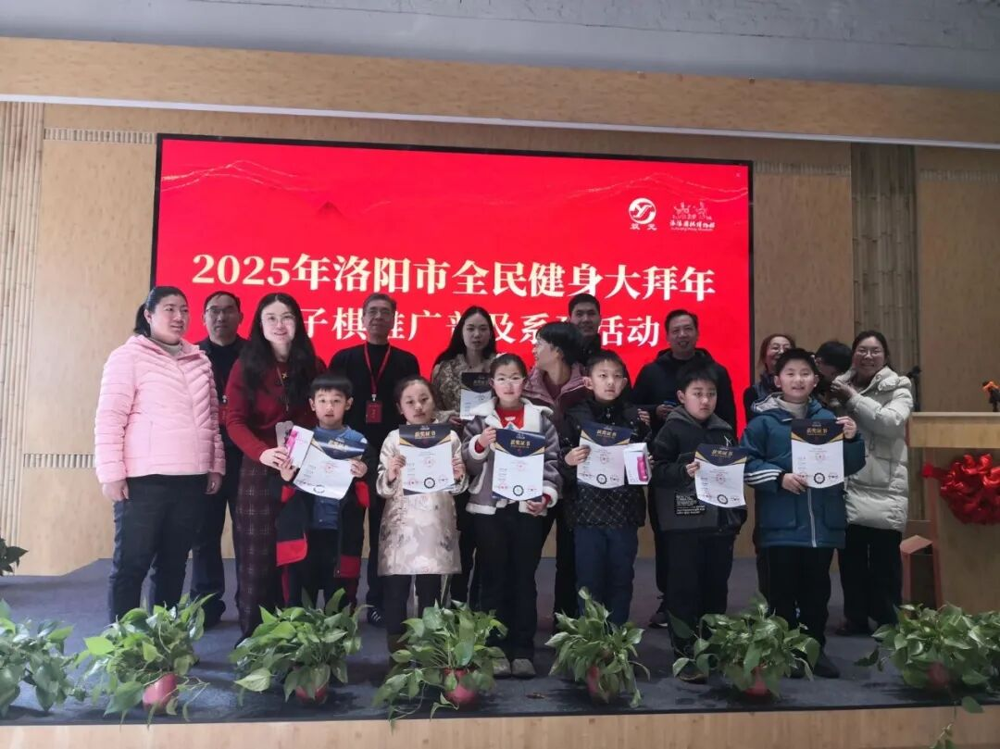
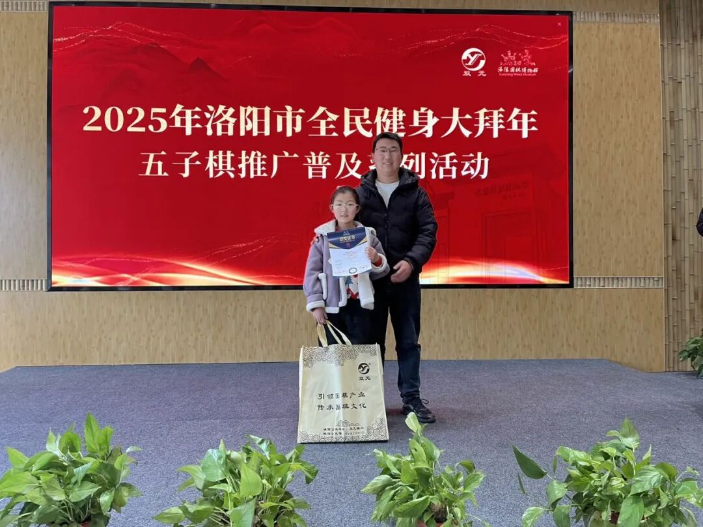
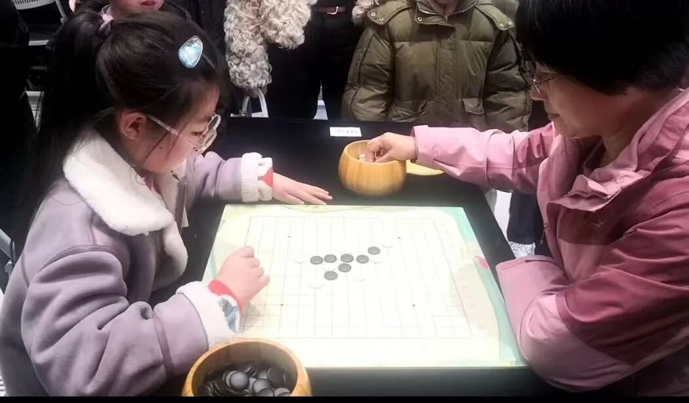
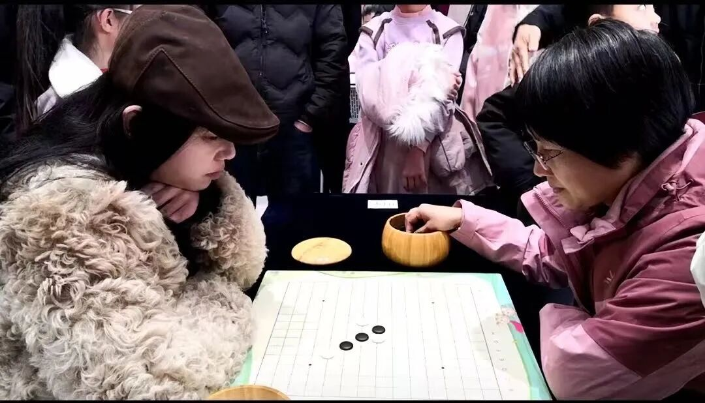
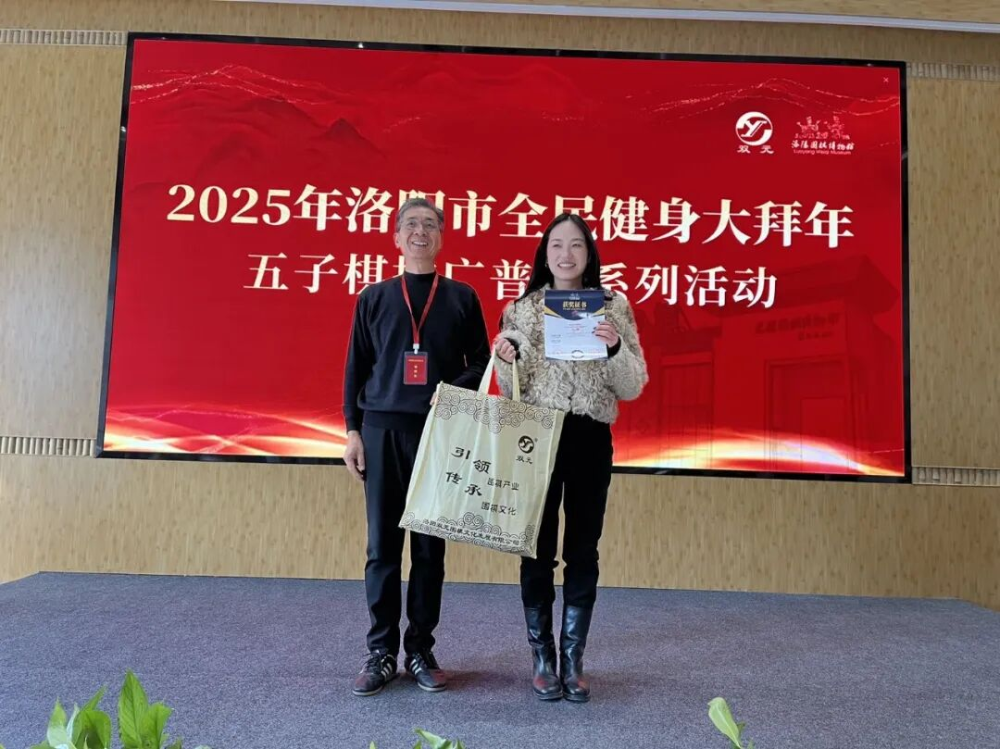
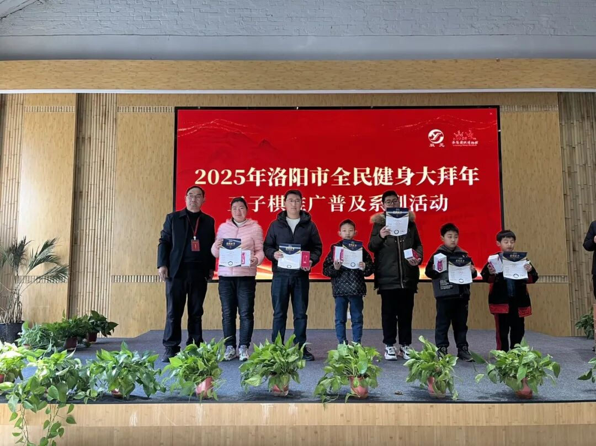
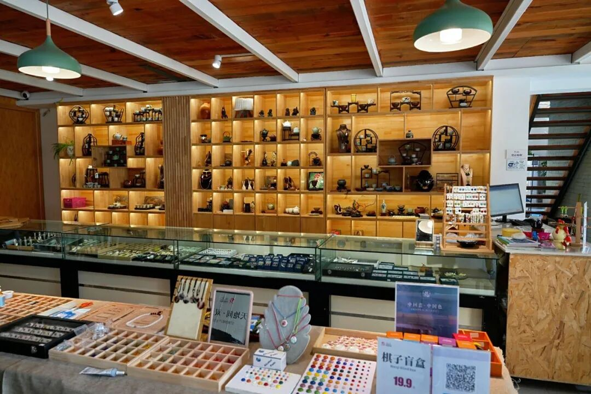
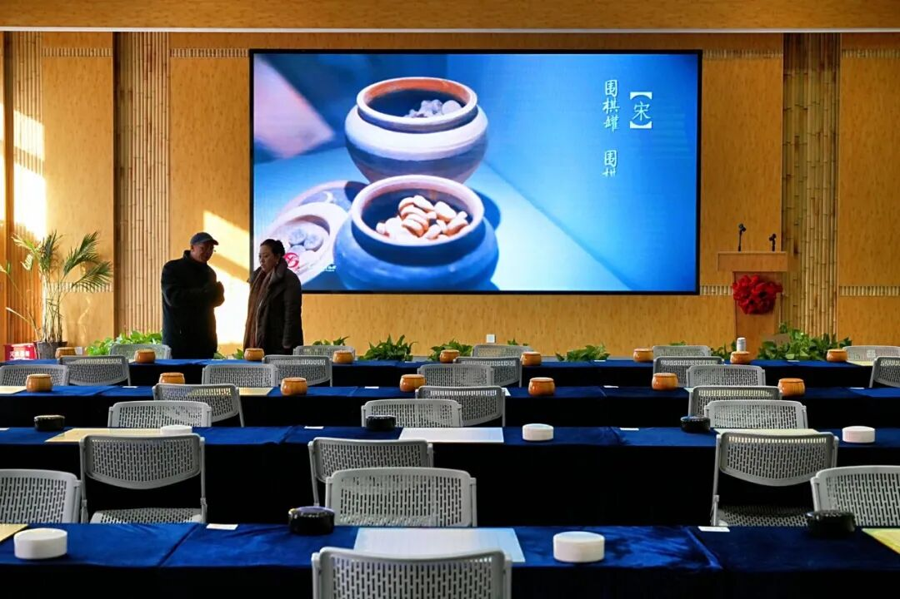

双元站赛事鸣金收枰
五子棋棋王浮耀启程
洛阳市全民健身大拜年五子棋推广普及系列活动--双元站，经过紧张有序的四场对弈，轻松愉悦的参观游研，成果丰硕，圆满收枰。
来自市、区、县上百名五子棋爱好者，踊跃参加五子棋个人赛、五子棋亲子家庭联赛、五子棋棋子手工制作、五子棋技战术知识讲析等项目。

19日赛事，个人组冠军和亲子联棋组冠军均由8岁的柴云曦及其家庭斩获。

赛事高潮聚焦本站个人组冠军对决，廖汉娇对阵柴云曦，廖汉娇执白胜出。

“双元站棋王”争夺，在廖汉娇与实力派棋手张夏玲老师之间展开，张夏玲执白问鼎，荣获洛阳市首位五子棋棋王称号。


本次赛事亮点纷呈，少年冠军柴云曦抢眼入镜，纹枰对弈中，面对成年棋手，从容镇定，落子稳静，信心满满，颇有少年大将风范，成为五子棋界希望之星。
廖汉娇与棋王张夏玲对决中，更是沉着冷静，不畏强手，敢于挑战，执黑争先，一路排兵布阵，平静中暗藏杀机，步步惊心。给现场众多观摩棋手带来惊奇、赞许，紧张程度冲棚。

以周淑贞、郝胜杰为代表的赛事工作人员，认真敬业，尽职尽责，默默奉献，是赛事活动有序推进的可靠保证。
双元围棋博物馆有限公司为本站活动提供所有奖品和服务，企会携手，合作共赢。
临近年节，天气寒冷，五子棋赛场上，参赛棋手神情欢愉，其乐融融，如沐春风。相信通过本站活动，会有更多的人认识五子棋，结缘五子棋，爱上五子棋，使这项益智运动走入千家万户。

